2022年北京市中考生物真题 原卷解析
2022年北京市初中学业水平考试
生物试卷
一、选择题（本大题共25小题，每小题1分，共25分。在每小题给出的四个选项中，只有一项是最符合题目要求的）
1. 同学们用光学显微镜观察到如图所示几种组织细胞，其中具有细胞壁的是
A.  B.
B.  C.
C.  D.
D. 
【答案】A
【解析】
【分析】一般来说，植物细胞具有细胞壁，动物细胞没有细胞壁。
【详解】A是洋葱表皮细胞，B是神经细胞，C是红细胞，D是肌肉细胞。
故选A。
2. 草履虫是单细胞生物，下列相关叙述错误的是
A. 能对外界刺激作出反应B. 自己制造有机物
C. 主要通过分裂产生新的个体D. 能排出代谢废物
【答案】B
【解析】
【分析】草履虫是一种身体很小，圆筒形的原生动物，它只由一个细胞构成，是单细胞生物，雌雄同体。最常见的是尾草履虫。体长只有180至280微米。它和变形虫的寿命最短，以小时来计算，寿命时间为一昼夜左右。正因为草履虫结构简单，常用为实验材料。
【详解】A．草履虫是单细胞生物，满足生物的特征，能对外界刺激作出反应，A正确。
B．草履虫体内没有叶绿体，不能自己制造有机物，属于异养型生物，B错误。
C．草履虫是单细胞生物，主要通过分裂产生新的个体，C正确。
D．草履虫是单细胞生物，满足生物的特征，能排出代谢废物，D正确。
故选B。
3. 2022年4月，我国科考队发现的一株高达83.2米的冷杉，刷新了中国最高树木纪录。水从该植株根部运输到茎顶端的主要动力是
A. 呼吸作用B. 光合作用C. 蒸腾作用D. 吸收作用
【答案】C
【解析】
【分析】水分从活的植物体表面以水蒸气状态散失到大气中的过程，叫做蒸腾作用。植物的蒸腾作用能促进水分的吸收，同时拉动水分与无机盐在体内的运输，保证各组织器官对水和无机盐的需要；另一方面，植物的蒸腾作用能降低叶片表面的温度，避免其因气温过高而被灼伤。
【详解】A．细胞利用氧，将有机物分解成二氧化碳和水，并且将储存在有机物中的能量释放出来，供生命活动的需要，这个过程叫做呼吸作用。呼吸作用主要是在线粒体中进行的，A错误。
B．光合作用实质上是绿色植物通过叶绿体，利用光能，把二氧化碳和水转化成储存能量的有机物，并且释放出氧气的过程，B错误。
C．水分从活的植物体表面以水蒸气状态散失到大气中的过程，叫做蒸腾作用。植物的蒸腾作用能促进水分的吸收，同时拉动水分与无机盐在体内的运输，C正确。
D．吸收作用主要是指根系对水分的吸收，D错误。
故选C。
4. 香果树是我国特有的濒危珍稀植物，自然条件下成苗率低。为促进香果树繁育，科研人员研究不同遮阴程度对幼苗光合速率的影响，结果如图。下列相关叙述错误的是

A. 四组幼苗应置于相同环境温度下B. 光合速率受光照强度的影响
C. 轻度遮阴时幼苗释放的氧气多D. 重度遮阴条件最适宜培育幼苗
【答案】D
【解析】
【分析】绿色植物通过叶绿体利用光能，把二氧化碳和水转化成储存能量的有机物（如淀粉），并且释放出氧气的过程，叫做光合作用。光合作用受光照强度的影响，一般来说，光照强度越强，光合作用速率越强。对照实验是在研究一种条件对研究对象的影响时，所进行的除了这种条件不同外，其他条件都相同的实验，这个不同的条件，就是唯一变量。一般的对实验变量进行处理的，就是实验组，没有对实验变量进行处理的就是对照组。该实验为了研究不同遮阴程度对幼苗光合速率的影响，设置了四组个组。从实验结果可知在轻度遮阴时幼苗光合作用强度最强。
【详解】A．该对照实验中只能有一个变量（遮阴程度），其它条件应相同。这样便于排除其他条件干扰实验。因此四组幼苗应置于相同环境温度下，A正确。
B．遮阴程度影响了光照强度，从实验结果可知幼苗的光合速率受光照强度的影响，B正确。
C．从实验结果可知，轻度遮阴时幼苗光合速率最强，释放的氧气最多，C正确。
D．重度遮阴条件下，幼苗的光合速率最低，产生的有机物过少，不利于幼苗的生长，D错误。
故选D。
5. 同学们在课堂上利用萌发的和煮熟的种子（初始温度相同）探究植物的呼吸作用，实验过程及结果如图。


下列相关叙述错误的是
A. 煮熟 种子无法进行呼吸作用
种子无法进行呼吸作用
B. 甲组温度计示数低于乙组
C. 甲组蜡烛迅速熄灭，乙组蜡烛继续燃烧
D. 实验可证明萌发的种子呼吸作用消耗氧气
【答案】B
【解析】
【分析】细胞利用氧，将有机物分解成二氧化碳和水，并且将储存在有机物中的能量释放出来，供生命活动的需要，这个过程叫做呼吸作用。呼吸作用主要是在线粒体中进行的。甲组萌发的种子进行呼吸作用，乙组不进行。
【详解】A．煮熟的种子，不能进行生命活动，无法进行呼吸作用，A正确。
B．呼吸作用能将储存在有机物中的能量释放出来，故甲组温度计示数高于乙组，B错误。
C．呼吸作用消耗了氧气，产生了二氧化碳，而蜡烛的燃烧需要氧气，故甲组蜡烛迅速熄灭。而乙组煮熟的种子未消耗氧气，故蜡烛继续燃烧，C正确。
D．通过对比，实验可证明萌发的种子呼吸作用消耗氧气，D正确。
故选B。
6. 下列营养物质不需要经过消化可以直接被人体吸收的是
A. 淀粉B. 脂肪
C. 维生素D. 蛋白质
【答案】C
【解析】
【分析】食物中含有六大类营养物质：蛋白质、糖类、脂肪、维生素、水和无机盐，每一类营养物质都是人体所必需的。其中，维生素、水和无机盐等小分子的营养物质人体可以直接吸收利用，而蛋白质、糖类、脂肪这些大分子的营养物质是不溶于水的，必须在消化道内变成小分子的能溶于水的物质后，才能被消化道壁吸收。解答即可。
【详解】食物所含的营养物质中，水、无机盐、维生素是小分子的物质能够直接被人体消化道吸收，而蛋白质、淀粉和脂肪是大分子物质需经过消化后分别被分解成氨基酸、葡萄糖、甘油和脂肪酸小分子物质才能被吸收，故选：C。
【点睛】解题的关键是明确人体能够直接吸收的营养物质是小分子的、溶于水的物质。
7. 如图是人体消化系统结构模式图。下列相关叙述错误的是

A. 脂肪可在①中初步分解
B. ②所示的消化腺可分泌胆汁
C. ③分泌的消化液含蛋白酶
D. 消化和吸收的主要场所是④
【答案】A
【解析】
【分析】本题考查消化系统的结构及功能。图中①是口腔，②是肝脏，③是胃，④是小肠。
【详解】A．①是口腔，能初步分解淀粉为麦芽糖，不能分解脂肪，A错误。
B．②是肝脏，能分泌胆汁，帮助脂肪的消化，B正确。
C．③是胃，胃内有胃腺，胃腺能分泌胃液，胃液中胃蛋白酶能初步消化蛋白质，C正确。
D．④是小肠，小肠是消化和吸收的主要场所，D正确。
故选A。
8. 《中国居民膳食指南（2022）》通过平衡膳食餐盘（如图）宣传平衡膳食的理念。下列相关叙述错误的是

A. 肉蛋奶是人体所需能量的主要来源
B. 水果、蔬菜可提供维生素
C. 摄入食物的类别要多样
D. 摄入食物的量要适当
【答案】A
【解析】
【分析】合理营养是指全面而平衡的营养。全面是指摄取的营养素种类齐全。平衡是指摄取的各种营养素的量合适，与身体的需要保持平衡。食物主要含有糖类、脂肪、蛋白质、水、无机盐、维生素六类营养物质。
【详解】A．人体生命活动所需要的能量，主要是由糖类提供的。葡萄糖、蔗糖、淀粉等都属于糖类。奶、蛋、鱼、肉类食物含有丰富的蛋白质。蛋白质是构成人体细胞的重要物质，人的生长发育以及受损细胞的修复和更新，都离不开蛋白质，A错误。
B．维生素是一类比较简单的有机物，种类很多。它们不是构成人体细胞的主要物质，也不为人体生命活动提供能量，B正确。
C．合理营养是指全面而平衡的营养。全面是指摄取的营养素种类齐全，C正确。
D．摄取的各种营养素的量合适，与身体的需要保持平衡，D正确。
故选A。
9. 血细胞包括红细胞、白细胞和血小板，其中血小板功能是
A. 吞噬病菌B. 运输氧气C. 促进止血D. 运输代谢废物
【答案】C
【解析】
【分析】血细胞包括红细胞、白细胞和血小板。①红细胞（RBC）：是数量最多的血细胞，成熟的红细胞没有细胞核，富含血红蛋白（Hb），具有运输氧气的功能，也运输一部分二氧化碳。②白细胞（WBC）：是数量最少的血细胞，有细胞核，但比红细胞大，能吞噬病菌，有防御保护功能。③血小板（PLT）：是体积最小的血细胞，无细胞核，形状不规则，有止血和凝血的作用。
【详解】A．白细胞能吞噬病菌，有防御保护功能，A错误。
B．红细胞具有运输氧气的功能，也运输一部分二氧化碳，B错误。
C．血小板有止血和凝血的作用，C正确。
D．血浆功能是运载血细胞，运输养料和废物，D错误。
故选C。
10. 毛细血管是连通最小动脉与静脉的血管。与毛细血管物质交换功能相适应的特点不包括
A. 数量多，分布广B. 管壁薄，由一层上皮细胞构成
C. 管内血流速度快D. 管径小，只允许红细胞单行通过
【答案】C
【解析】
【分析】毛细血管在体内数量很多，分布很广；其管壁最薄，只有一层扁平上皮细胞构成；管的内径十分小，只允许红细胞单行通过；管内血流速度最慢；连通于最小的动脉和静脉。这些特点便于血液与组织细胞充分地进行物质交换。
【详解】A．毛细血管在体内数量多、分布广，便于身体各部分组织进行物质交换，A不符合题意。
B．毛细血管管壁薄，由一层上皮细胞构成，交换的物质更容易穿过血管壁，B不符合题意。
C．毛细血管内血流速度最慢，C符合题意。
D．毛细血管管径小，只允许红细胞单行通过，血流速度慢，利于充分进行物质交换，D不符合题意。
故选C。
11. 如图是人体心脏结构模式图。下列相关叙述错误的是

A. 心肌收缩为血液循环提供动力B. 左心室收缩，将血液泵至肺动脉
C. 房、室间的瓣膜可防止血液倒流D. 右心房、右心室内流的是静脉血
【答案】B
【解析】
【分析】心脏为人体的血液循环提供动力，心脏主要由心肌组成，心脏壁主要由肌肉组织构成。
心脏有四个腔，左心房、左心室、右心房、右心室，其中左心室壁最厚。左右心房之间及左右心室之间被肌肉壁隔开，不相联通，使得心脏完全分成四腔，动脉血和静脉血不再混合，提高输送氧的能力。左心房接收肺静脉注入的含氧量高的动脉血，右心房接收上下腔静脉注入的含氧量少的静脉血。故心脏左侧的心腔和血管（左心房、左心室、肺静脉、主动脉），都流含氧丰富的动脉血；心脏右侧的心腔和血管（右心房、右心室、上下腔静脉、肺动脉），都流含量较少的静脉血。
【详解】A．心肌收缩将血液挤出心脏，为血液循环提供动力，A正确。
B．左心室与主动脉相连，左心室收缩，将血液泵至主动脉，B错误。
C．房、室间的瓣膜称为房室瓣，可使血液只由心房流向心室，防止血液倒流，C正确。
D．右心房、右心室内流的是来自上下腔静脉的静脉血，左心房和左心室内流的是来自肺静脉的动脉血，D正确。
故选B。
12. 尿酸过多在肾小管处形成结晶，会引起上皮细胞坏死，这直接影响肾小管
A. 滤过（过滤）作用B. 重吸收作用C. 贮存尿液D. 排出尿液
【答案】B
【解析】
【分析】尿的形成要经过肾小球（和肾小囊内壁）的滤过和肾小管的重吸收作用。血浆通过肾小球的滤过作用，除了大分子的蛋白质外，其他的如水、无机盐、尿素、葡萄糖会滤过到肾小囊腔形成原尿；原尿流经肾小管时，其中大部分水、部分无机盐和全部的葡萄糖被重新吸收回血液，而剩下的如尿素、一部分无机盐和水等由肾小管流出形成尿液。
【详解】A．尿的形成过程中起过滤作用的是肾小球和肾小囊内壁，A不符合题意。
B．尿的形成要经过肾小球（和肾小囊壁）的滤过和肾小管的重吸收作用。尿酸过多在肾小管处形成结晶，引起上皮细胞坏死，会影响肾小管的重吸收作用，B符合题意。
C．贮存尿液是膀胱的功能，C不符合题意。
D．排出尿液是尿道的功能，D不符合题意。
故选B。
13. 为降低血糖，糖尿病患者可注射的激素是
A. 甲状腺激素B. 性激素
C. 生长激素D. 胰岛素
【答案】D
【解析】
【分析】人体内多种多样的激素，都对生命活动起着重要的调节作用。人体内的激素含量少，作用大。每100毫升血液中，只有几微克激素，却对生长发育和生殖等生命活动起着重要的调节作用。
【详解】A．甲状腺能分泌甲状腺激素等。甲状腺激素可以促进代谢，促进生长发育，提高神经系统的兴奋性，A错误。
B．性激素能促进性器官的发育，并促使人体出现其他的性别特征，B错误。
C．生长激素可以促进人的生长发育。年幼时分泌过多会患巨人症，年幼时分泌不足会患侏儒症。成年后分泌过多会患肢端肥大症，C错误。
D．胰岛B细胞能产生胰岛素。胰岛素可以调节糖在体内的吸收、利用和转化等，当人体内胰岛素分泌不足时，细胞吸收和利用血糖的能力就会减弱，从而导致血糖浓度超过正常水平，为降低血糖，糖尿病患者可注射适量的胰岛素，D正确。
故选D。
14. 人吃酸梅时，唾液分泌量增加，该反射过程如图所示。下列关于该反射的叙述错误的是

A. 结构基础为反射弧B. 神经中枢在脑干
C. 效应器为唾液腺D. 属于条件（复杂）反射
【答案】D
【解析】
【分析】神经调节的基本方式是反射，反射活动的结构基础称为反射弧，包括感受器、传入神经、神经中枢、传出神经和效应器。图中包含的反射弧：舌→传入神经→脑干→传出神经→唾液腺。
条件反射是人出生以后在生活过程中逐渐形成的后天性反射，是在非条件反射的基础上，经过一定的过程，在大脑皮层参与下完成的，是一种高级的神经活动，是高级神经活动的基本方式；非条件反射是指人生来就有的先天性反射，是一种比较低级的神经活动，由大脑皮层以下的神经中枢(如脑干、脊髓)参与即可完成。
【详解】A．神经调节的基本方式是反射，反射活动的结构基础称为反射弧，A正确。
B．由图可知，该反射的神经中枢在脑干，B正确。
C．效应器由传出神经末梢和它控制的肌肉或腺体组成，接受传出神经传来的神经冲动，引起肌肉或腺体活动。由题意可知，该反射的效应器是唾液腺，C正确。
D．条件反射是人出生以后在生活过程中逐渐形成的后天性反射，是在非条件反射的基础上，经过一定的过程，在大脑皮层参与下完成的。结合分析可知，人吃酸梅时，唾液分泌量增加是非条件反射，没有大脑皮层的参与，D错误。
故选D。
15. 青春期是人一生中重要的发育时期，需保持身心健康。下列做法不恰当的是
A. 关注生殖系统卫生B. 拒绝和异性同学交流
C. 积极参加文体活动D. 主动参与家务劳动
【答案】B
【解析】
【分析】青春期是一生身体发育和智力发展的黄金时期。
（1）身体变化。①进入青春期，男孩和女孩的身高、体重都迅速增加，这是青春期形态发育的显著特点；②神经系统以及心脏和肺等器官的功能也明显增强。③性器官迅速发育，男孩出现遗精，女孩会来月经，这是青春期发育的突出特征。
（2）心理变化。①有了强烈的独立的意识、叛逆性，遇到挫折又有依赖性，渴望得到家长和老师的关怀；②内心世界逐渐复杂，有的事情不想跟家长交流；③随着身体的发育，性意识也开始萌动，常表现为从初期的与异性疏远，到逐渐愿意与异性接近，或对异性产生朦胧的依恋。这些都是正常的心理变化。
【详解】A．进入青春期，男性女性性器官迅速发育，应正确认识生殖系统，关注生殖系统卫生，A不符合题意。
B．青春期的同学开始对异性充满好奇，应该建立团结互助的男女同学关系，B符合题意。
C．同学们应正确对待青春期自身的身心变化，积极参加文体活动，树立远大理想，努力学习，C不符合题意。
D．主动参与家务劳动能锻炼自己的生活自理能力，帮助父母减轻负担，D不符合题意。
故选B。
16. 握手是人与人之间表示友好的一种礼仪。握手时，大拇指要向手心运动。如图是人右手掌心面骨骼及部分肌肉示意图，下列相关叙述错误的是

A. 拇短掌肌两端附着在同一块骨上B. 握住手时，拇收肌处于收缩状态
C. 握手时，骨骼肌牵拉骨绕关节运动D. 握手动作在神经系统调节下完成
【答案】A
【解析】
【分析】骨骼肌包括肌腹和肌腱，肌腹是骨骼肌中间较粗的部分，受刺激而收缩；肌腱是骨骼肌两端较细的部分，跨关节附在不同的骨上，有固定作用。骨骼肌有受刺激而收缩的特性，当骨骼肌受神经传来的刺激收缩时，就会牵动着它所附着的骨，绕着关节转动，于是躯体就产生了运动。在运动中，骨起杠杆作用，关节起支点作用，骨骼肌收缩产生动力。运动并不是仅靠运动系统来完成，它需要神经系统的控制和调节，它需要能量的供应，因此还需要消化系统、呼吸系统、循环系统等系统的配合。
【详解】A．拇短展肌两端附着在不同的两块骨上，A错误。
B．握住手时，大拇指向掌心靠近，拇收肌处于收缩状态，B正确。
C．握手时，大拇指需要向掌心靠近，此过程是骨骼肌牵拉骨绕关节运动产生的，C正确。
D．运动动作的产生是在神经系统的调节下，其他系统的配合下完成的，D正确。
故选A。
17. 植物的下列繁殖方式不属于无性生殖的是
A. 播种玉米种子B. 嫁接苹果枝条C. 扦插柳树枝条D. 兰花组织培养
【答案】A
【解析】
【分析】无性生殖：不经过两性生殖细胞的结合，由母体直接产生新个体，这种生殖方式称为无性生殖。无性生殖产生的后代，只具有母体的遗传特性。如植物中的扦插，嫁接等繁殖方式。
有性生殖：由两性生殖细胞结合形成受精卵，再由受精卵发育成新个体的生殖方式属于有性生殖。有性生殖的后代，具有双亲的遗传特性。如植物用种子繁殖后代。
【详解】结合分析可知，播种玉米种子的繁殖方式属于有性生殖。嫁接、扦插和组织培养都属于无性生殖。
故选A。
18. 2022年4月，中国国家植物园在北京正式揭牌，其标志中包含了我国特有珍稀裸子植物银杏和水杉等元素（如图）。这两种植物的基本特征是

A. 具有假根、茎和叶的分化B. 不具有输导组织
C. 种子裸露，无果皮包被D. 生活在阴湿环境
【答案】C
【解析】
【分析】银杏和水杉是裸子植物，裸子植物的种子没有果皮包被，种子裸露在外面。
【详解】A．具有假根、茎和叶的分化的植物类群是苔藓植物，A不符合题意。
B．蕨类植物、裸子植物、被子植物都具有输导组织，B不符合题意。
C．银杏和水杉是裸子植物，裸子植物的种子没有果皮包被，种子裸露在外面，C符合题意。
D．裸子植物不一定生活在阴湿环境，可以广泛分布在森林中，D不符合题意。
故选C。
19. 正常女性体细胞染色体的组成是（ ）
A. 22条常染色体+XB. 22对常染色体+Y
C. 22对常染色体+XYD. 22对常染色体+XX
【答案】D
【解析】
【分析】人的体细胞内的23对染色体，有一对染色体与人的性别有关，叫做性染色体；男性的性染色体是XY，女性的性染色体是XX。
【详解】男女体细胞中都有23对染色体，有22对染色体的形态、大小男女的基本相同，其中有一对染色体在形态、大小上存在着明显差异，这对染色体与人的性别决定有关，称为性染色体。男性体细胞的性染色体中，较大的一条命名为X染色体，较小一条称为Y染色体，因此正常男性体细胞染色体组成的是22对+XY；女性体细胞中的性染色体形态大小基本相同，称为XX染色体，因此正常女性体细胞中染色体的组成是22对+XX。
故选D。
【点睛】男女体内染色体的组成：男性：22对+XY，女性：22对+XX。
20. 紫花苜蓿是一种优质牧草。我国航天员将其种子带入太空，使种子在射线和微重力等因素作用下发生变异，选育新品种。该育种方式从根本上改变了紫花苜蓿的
A. 生活环境B. 形态结构C. 遗传物质D. 生活习性
【答案】C
【解析】
【分析】太空育种即航天育种，也称空间诱变育种，是将作物种子或诱变材料搭乘返回式卫星送到太空，利用太空特殊的环境诱变作用，使种子产生变异，再返回地面培育作物新品种的育种新技术。
【详解】太空育种即航天育种，也称空间诱变育种，是将作物种子或诱变材料搭乘返回式卫星送到太空，利用太空特殊的环境诱变作用，使种子产生变异，再返回地面培育作物新品种的育种新技术。太空育种主要是通过强辐射，微重力和高真空等太空综合环境因素诱发植物种子的遗传物质发生变异。因此太空育种能诱发生物产生可遗传的变异。因此，紫花苜蓿是一种优质牧草。我国航天员将其种子带入太空，使种子在射线和微重力等因素作用下发生变异，选育新品种。该育种方式从根本上改变了紫花苜蓿的遗传物质。
故选C。
21. 中华白海豚是列入《中国水生野生动物保护蓝皮书》中的濒危物种，在分类上判断其为哺乳动物，主要依据是
A. 体内受精B. 用肺呼吸C. 胎生、哺乳D. 体温恒定
【答案】C
【解析】
【分析】哺乳动物的主要特征：体表面有毛；牙齿分化，体腔内有膈，心脏四腔，用肺呼吸；大脑发达，体温恒定，是恒温动物；哺乳胎生。
【详解】A．体内受精的不仅是哺乳动物，如爬行动物和鸟类都是体内受精，故不能通过体内受精判断中华白海豚属于哺乳动物，A不符合题意。
B．用肺呼吸的不仅是哺乳动物，如爬行动物和鸟类都用肺呼吸，故不能通过用肺呼吸判断中华白海豚属于哺乳动物，B不符合题意。
C．胎生、哺乳是哺乳动物特有特征，C符合题意。
D．体温恒定的不仅是哺乳动物，鸟类的体温也恒定，故不能通过体温恒定判断中华白海豚属于哺乳动物，D不符合题意。
故选C。
22. 加拉帕戈斯群岛的不同小岛上生活的地雀种类存在差异。地雀喙型的进化过程如图。下列相关叙述错误的是

A. 多种地雀具有共同的祖先B. 地雀祖先存在喙型不同的变异
C. 喙型的进化与食物种类无关D. 喙型的进化是自然选择的结果
【答案】C
【解析】
【分析】达尔文认为：生物具有过度繁殖的倾向，而在自然界，生物赖以生存的食物和空间是非常有限的，这样就必然存在生存斗争；在生存斗争过程中，具有有利变异的个体，就容易生存，具有不利变异的个体，就被淘汰。适应环境的变异逐代遗传下去并得到积累和加强，经过长期的进化过程，形成了形态各异、食性和栖息场所也各不相同的地雀种群。
【详解】A．根据进化过程图可知，这些雀鸟来自于共同的原始祖先，由于食性不同，喙型的进化方向不同，A正确。
B．地雀喙的形状和大小有所区别，是地雀祖先存在喙型不同的变异，不同环境选择了不同的喙型的结果，B正确。
C．喙型的进化是自然选择的结果，而食物种类作为自然环境条件对各种喙型进行选择，故喙型的进化与食物种类有关，且喙型与食性是相适应的，C错误。
D．结合分析可知，喙型的进化是长期自然选择的结果，环境中的食物因素决定了雀鸟喙的进化方向，D正确。
故选C。
23. 水痘是由水痘--带状疱疹病毒引起的，可通过注射水痘疫苗进行预防。下列相关叙述错误的是
A. 该病毒是引发水痘的病原体B. 水痘疫苗起到抗原的作用
C. 水痘疫苗刺激机体产生抗体D. 该过程属于非特异性免疫
【答案】D
【解析】
【分析】病原体是引起传染病的细菌、病毒、寄生虫等生物。抗原：能引起淋巴细胞产生抗体的物质。抗原包括进入人体的微生物等病原体、异物、异体器官等。特异性免疫（又称后天性免疫）：出生后才产生的，只针对某一特定的病原体或异物起作用。通过注射疫苗获得的免疫力属于特异性免疫。
【详解】A．病原体是引起传染病的细菌、病毒、寄生虫等生物。带状疱疹病毒是引发水痘的病原体，A正确。
B．抗原：能引起淋巴细胞产生抗体的物质。抗原包括进入人体的微生物等病原体、异物、异体器官等。水痘疫苗起到抗原的作用，B正确。
C．病原体侵入人体后，刺激了淋巴细胞，使其产生了一种抵抗该病原体的特殊蛋白质，叫抗体。因此，水痘疫苗刺激机体产生抗体 ，C正确。
D．特异性免疫（又称后天性免疫）：出生后才产生的，只针对某一特定的病原体或异物起作用。通过注射疫苗获得的免疫力属于特异性免疫。因此，注射水痘疫苗预防水痘的过程属于特异性免疫，D错误。
故选D。
24. 下列食品制作过程中没有应用发酵技术的是
A. 酸奶B. 米酒C. 腐乳D. 绿豆汤
【答案】D
【解析】
【分析】发酵技术是指利用微生物的发酵作用，运用一些技术手段控制发酵过程，大规模的生产发酵产品的技术，据此解答。
【详解】A．制酸奶和泡菜要用到乳酸菌，A错误。
B．制馒头、做面包、酿酒等要用到酵母菌，B错误。
C．制腐乳要用到霉菌，C错误。
D．绿豆汤是用绿豆加水，加热而成的，与发酵无关，D正确。
故选D。
25. 北京冬奥会践行“绿色奥运”理念，实现了碳中和，即二氧化碳等温室气体的排放和消耗之间达到平衡。下列做法能够消耗大气中二氧化碳的是
A. 植树造林B. 建筑材料回收利用
C. 风能发电D. 倡导绿色出行方式
【答案】A
【解析】
【分析】碳中和是在一定时间内直接或间接产生的温室气体排放总量，通过植树造林、节能减排等形式，以抵消自身产生的二氧化碳排放量，实现二氧化碳“零排放”，要合理使用化石燃料，改用清洁型新能源。
【详解】A．植树造林使森林覆盖率增加，植物的光合作用能吸收二氧化碳，释放氧气，A符合题意。
B．建筑材料回收利用能节约资源，提高资源利用率，减少资源的浪费，但不能消耗大气中二氧化碳，B不符合题意。
C．风能发电能减少二氧化碳的产生，不能消耗大气中二氧化碳，C不符合题意。
D．倡导绿色出行方式能减少二氧化碳的产生，不能消耗大气中二氧化碳，D不符合题意。
故选A。
二、非选择题（本大题共7小题，共45分）
26. 小林学习绿色开花植物的知识后，以葫芦为材料完成了植物栽培实践活动。
（1）小林的栽培记录如图所示，请将该记录补充完整。
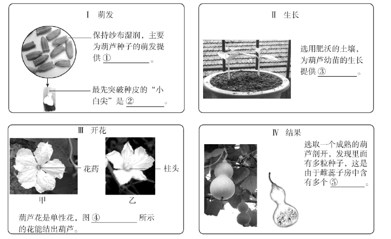
①_____,②_____,③_____,④_____,⑤_____,
（2）小林发现，有些雌花没有结出葫芦，他推测可能是因为没有传粉造成的。通过____的方法，可以帮助小林提高葫芦的授粉率，收获更多葫芦。
【答案】（1） ①. 水分 ②. 胚根 ③. 无机盐 ④. 乙 ⑤. 胚珠 （2）人工授粉
【解析】
【分析】本题考查被子植物的一生，包括种子萌发、植株生长、开花结果的过程等相关知识。
1．种子萌发的环境条件为一定的水分、适宜的温度和充足的空气；自身条件是胚是完整的、胚是活的、种子不在休眠期以及胚发育所需的营养物质。
2．水和无机盐对植物的生长具有重要作用，植物生长需要水和无机盐。绿色植物的生活需要水，水是植物体的重要组成成分，植物体内水分充足时，植株才能硬挺，保持直立的姿态，叶片才能舒展，有利于光合作用，提高产量。植物的生长也需要多种无机盐，无机盐必须溶解在水中植物才能吸收利用。植物需要量最大的无机盐是含氮、含磷、含钾的无机盐。肥沃的土壤含有丰富的无机盐，且保水能力适中，利于葫芦幼苗的生长。
3．葫芦的花是单性花，在一朵花中只有雌蕊或只有雄蕊的花叫单性花，单性花分为雌花和雄花。
4．葫芦花传粉受精后，子房发育成果实：
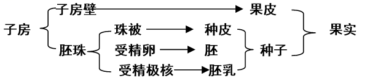
【小问1详解】种子萌发的环境条件为一定的水分、适宜的温度和充足的空气。保持纱布湿润的目的是给葫芦种子提供一定的水分。
植物的生长也需要多种无机盐，无机盐必须溶解在水中植物才能吸收利用。植物需要量最大的无机盐是含氮、含磷、含钾的无机盐，肥沃的土壤内含有的无机盐种类和数量更丰富。
在一朵花中只有雌蕊或只有雄蕊的花叫单性花，单性花分为雌花和雄花。葫芦花是单性花，甲图有花药，是雄花。乙图有柱头，是雌花。雌花才有结出葫芦。
传粉和受精结束后，子房内的胚珠发育成种子。一个葫芦内有多颗种子，证明葫芦雌花的子房内含有多颗胚珠。
【小问2详解】
异花传粉往往容易受到环境条件的限制，得不到传粉的机会，影响到果实和种子的产量。故为了弥补自然状态下的传粉不足，应给农作物辅以人工辅助授粉，提高葫芦的授粉率，收获更多葫芦。
27. 呼吸道是气体进出人体的通道，需时刻保持通畅。
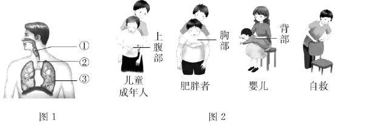
（1）图1为人体呼吸系统结构模式图。正常吞咽时，会厌软骨会盖住喉的入口处，避免食物进入喉和[②]_______，阻塞呼吸道。
（2）呼吸道阻塞会使气体无法进出肺，影响肺泡与血液之间进行_______，进而使组织细胞通过呼吸作用为生命活动提供的_______减少，严重时可导致死亡。
（3）若呼吸道被异物阻塞，危急情况下可采用海姆立克急救法实施救助（如图2）。据图分析，对儿童和成年人进行急救时，应快速向后上方挤压其_______部。挤压会导致被救者_______（填下列字母）。重复上述操作，直至异物被排出。施救时，应注意对不同人群挤压的部位不同，并且尽量不造成二次伤害。
a.膈顶上升→胸腔容积缩小→肺内气压增大→肺内气体推动异物向外移动
b.膈顶下降→胸腔容积扩大→肺内气压减小→肺内气体推动异物向外移动
c.膈顶上升→胸腔容积扩大→肺内气压减小→肺内气体推动异物向外移动
（4）为预防异物进入呼吸道，生活中应注意_______（写出一例即可）。
【答案】（1）气管
（2） ①. 气体交换 ②. 能量
（3） ①. 上腹 ②. a
（4）物品细小部件不能随意放置，避免幼儿吞入
【解析】
【分析】1．图1中①是喉，②是气管，③是肺。人们吞咽食物时，喉上升，会厌软骨向后倾斜，将喉门盖住，食物顺利进入食管。下咽动作完成以后，会厌软骨又恢复直立状态，以便进行呼吸。如果吃饭时大声说笑，就会使会厌软骨来不及向后倾斜，不能及时将喉门盖住，导致食物“呛”入气管的事故发生。
2．呼吸运动的结果实现了肺与外界的气体交换（即肺的通气）。呼吸运动包括吸气和呼气两个过程。①膈肌与肋间肌收缩，引起胸腔前后、左右及上下径均增大，膈肌顶部下降，胸廓的容积扩大，肺随之扩张，造成肺内气压减小，小于外界大气压，外界气体进入肺内，完成吸气；②当膈肌和肋间外肌舒张时，肋骨与胸骨因本身重力及弹性而回位，膈肌顶部升高，结果胸廓容积缩小，肺也随之回缩，造成肺内气压大于外界气压，肺内气体排出肺，完成呼气。海姆立克急救法进行急救时，被施救者相当于呼气的过程将异物咳出体外。
【小问1详解】
人们吞咽食物时，喉上升，会厌软骨向后倾斜，将喉门盖住，食物顺利进入食管。避免食物进入喉和气管，阻塞呼吸道。
【小问2详解】
肺泡与血液的气体交换过程：肺泡中的氧气透过肺泡壁和毛细血管壁进入血液；同时血液中的二氧化碳也通过这些毛细血管壁和肺泡壁进入肺泡，然后随着呼气过程排出体外。进入血液中的氧气，通过血液循环送到全身各处的组织细胞里。
呼吸道阻塞会使气体无法进出肺，影响肺泡与血液之间进行气体交换，导致机体缺乏氧气。细胞进行呼吸作用释放能量需要氧气的参与，机体缺乏氧气会影响细胞进行呼吸作用释放能量，严重时可导致死亡。
【小问3详解】
由图2可知，对儿童和成年人进行急救时，应快速向后上方挤压其上腹部。挤压时，被施救者的膈顶上升，使胸腔容积缩小，使肺内的气压增大，肺内气体就会推动异物向外移动（相当于向外呼气的过程），故选a。
【小问4详解】
为预防异物进入呼吸道，生活中应注意：吃饭时不大声说笑；物品细小部件不能随意放置，避免幼儿吞入等。
28. 青头潜鸭是国家一级重点保护野生动物，由于栖息地丧失，天敌捕食等原因导致其野外繁殖难度增大，濒危程度日趋严重。2022年4月，北京动物园建立了国内首个青头潜鸭人工种群。
（1）青头潜鸭在分类上属于脊索动物门、鸟_____、雁形目，每年5--7月在芦苇、蒲草丛等处产卵，该行为属于_____（填“先天性”或“学习”）行为。
（2）为保护青头潜鸭，工作人员到野外捡拾被遗弃的鸭卵，进行孵化。
①有些卵壳出现了细微裂痕，需进行修补，恢复卵壳的_____功能。
②孵化时要进行照蛋，以及时去除未经过_____作用的卵和死胚卵；提供适宜的孵化条件，保证鸭卵中的_____（填图中序号）能够发育成幼鸭。
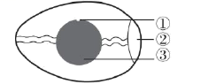
（3）对人工繁育的青头潜鸭进行野化放归是进一步的研究方向。由于人工繁育的青头潜鸭可能不会辨别天敌，放归前要进行躲避天敌的训练。此外还需要进行的训练有：_____（写出一例即可）。
【答案】（1） ①. 纲 ②. 先天性
（2） ①. 保护 ②. 受精 ③. ①
（3）觅食##飞翔
【解析】
【分析】鸟卵的结构，由外向内依次是卵壳、卵壳膜、气室、系带、卵白、卵黄膜、卵黄、胚盘等。
先天性行为是动物生来就有的，由动物体内的遗传物质所决定的行为，又称为本能，如蜜蜂采蜜、蜘蛛结网、亲鸟育雏等。先天性行为往往是一些简单的、出生时就必不可少的行为，是动物的一种先天具备的非条件反射行为。先天性行为往往是一些简单的，出生时就必不可少的行为，维持动物最基本生存的需要。
【小问1详解】
青头潜鸭,是国家一级保护动物,是属脊索动物门、鸟纲、雁形目、鸭科、潜鸭属的一种鸟鸟类。先天性行为是动物生来就有的，由动物体内的遗传物质所决定的行为，又称为本能。因此，每年5——7月在芦苇、蒲草丛等处产卵，该行为属于先天性行为。
【小问2详解】
卵壳：位于鸟卵的最外面，坚硬，具有防止卵细胞损伤，减少水分的蒸发的作用。卵壳上还有许多肉眼看不见的气孔，以保证鸟的胚胎发育时能够与外界进行气体交换。卵壳内具有卵壳膜，卵壳膜起保护作用。胚盘是卵黄表面中央一盘状小白点，是胚胎发育的部位。未受精的卵，胚盘色浅而小；已受精的卵的胚盘色浓而略大，这是因为胚胎发育已经开始。因此，为保护青头潜鸭，工作人员到野外捡拾被遗弃的鸭卵，进行孵化。①有些卵壳出现了细微裂痕，需进行修补，恢复卵壳的保护功能。②孵化时要进行照蛋，以及时去除未经过受精作用的卵和死胚卵；提供适宜的孵化条件，保证鸭卵中的①能够发育成幼鸭。
【小问3详解】
青头潜鸭春夏季在东北地区繁殖，就地取材筑巢产卵，雌雄轮流孵卵。约一个月后，雏鸟破壳而出，跟随双亲学习觅食、飞翔等生存技能。幼鸟长到一岁左右就离开双亲独立生活。
29. 眼是获取外界信息的重要结构，青少年要科学用眼，保护视力。
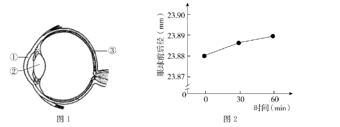
（1）在人体的结构层次中，眼属于_____，是由多种组织构成的。
（2）正常情况下，外界光线通过角膜、_____（填图1中序号）晶状体等结构的折射作用后，在视网膜上形成物像，最终在_____形成视觉。
（3）科研人员请视力正常的成年志愿者在弱光照下阅读，测定阅读前（0min）、阅读30min和60in时眼球前后径，结果如图2。与阅读前相比较，志愿者弱光照阅读后的眼球前后径变_____，推测长期弱光照阅读可能是引起_____（填“近视”或“远视”）的原因之一。
（4）除弱光外，还有很多因素影响视力。请写出一条学习生活中保护视力的措施：________________。
【答案】（1）器官 （2） ①. ② ②. 大脑皮层
（3） ①. 长 ②. 近视 （4）认真做眼保健操
【解析】
【分析】1．由不同的组织按照一定的次序结合在一起构成的行使一定功能的结构，叫做器官。如心脏、肝脏、肺、肾、眼、耳、皮肤等。
2．视觉形成的过程是：外界物体反射来的光线，经过角膜、房水，由瞳孔进入眼球内部，再经过晶状体和玻璃体的折射作用，在视网膜上能形成清晰的物象，物象刺激了视网膜上的感光细胞，这些感光细胞产生的神经冲动，沿着视神经传到大脑皮层的视觉中枢，就形成视觉。图1中①是角膜，②是晶状体，③是视网膜。
【小问1详解】
器官是由不同的组织按照一定的次序结合在一起构成的行使一定功能的结构，故眼属于器官。
【小问2详解】
正常情况下，外界光线依次通过角膜、晶状体等结构的折射后，在③视网膜上形成物像。视网膜上的感光细胞能够把物体的色彩、亮度等信息转化为神经冲动，神经冲动由视神经传递到大脑皮层的视觉中枢即形成视觉。
【小问3详解】
由图2可知，随着弱光照阅读时间的变长，志愿者的眼球前后径变长。所以推测长期弱光照阅读可能是引起近视的原因之一。
【小问4详解】
保护视力要做到“三要”、“五不看”。三要是：①读书写字的姿势要正确。②看书写字40分钟后要到室外活动或向远处眺望一会儿 ；③要认真做眼保健操，所按穴位要准确。五不看是：①不要在暗弱光线下和直射的阳光下看书写字；②不要躺在床上、在公共汽车上或走路时看书；③不要看字体过小、字行过密、字迹印刷不清的读物；④做作业不要用淡色铅笔；⑤看电视时间不要太久。
30. 水稻是重要的粮食作物，科研人员对水稻基因的功能开展了相关研究。
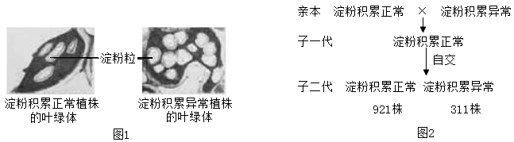
（1）水稻叶片通过_____作用制造的糖类，由_____（填“导管”或“筛管”）运输到根、茎和果实等其他部位。
（2）运输过程受阻，糖类会以淀粉的形式在叶绿体中异常积累，导致水稻减产。科研人员对淀粉积累异常植株与正常植株叶片中的叶绿体进行显微观察，结果见图1。据图可知，淀粉积累异常植株的叶绿体中淀粉粒的数量_____正常植株。
（3）淀粉积累正常与异常是一对_____。将淀粉积累正常与异常植株进行杂交，实验过程及结果如图2所示。据此判断，_____是隐性性状。若用B、b表示控制该性状的基因，子一代的基因组成是_________。
（4）进一步研究发现，该基因位于水稻的1号_________上，后者是遗传物质的载体。此研究有利于揭示糖类运输机制，可为水稻育种提供依据。
【答案】（1） ①. 光合 ②. 筛管
（2）大于 （3） ①. 相对性状 ②. 淀粉积累异常 ③. Bb
（4）染色体
【解析】
【分析】1．性状是指生物体形态结构、生理和行为等特征的统称，基因控制生物的性状。
2．生物的某些性状是有一对基因控制的，当控制某些性状的一对基因都是显性或一个显性一个隐性时，生物体表现为显性基因控制的性状，当控制某些性状的一对基因都为隐性时，隐性基因控制的性状才会表现出来。
3．在一对相对性状的遗传过程中，子代个体出现了亲代没有的性状，则亲代个体表现的性状是显性状，基因组成是杂合体（一个显性基因和一个隐性基因组成），子代新出现的性状是隐性性状。
【小问1详解】
光合作用是绿色植物通过叶绿体，利用光能，把二氧化碳和水转化成储存能量的有机物，并释放氧气的过程，因此水稻叶片通过光合作用制造的有机物（淀粉），通过筛管运输到根、茎和果实等其他部位。
【小问2详解】
植物叶绿体中淀粉的积累程度会影响光合作用的强度，淀粉积累越多，光合作用越弱，据图可知，淀粉积累异常植株的叶绿体中淀粉粒的数量大于正常植株。
【小问3详解】
相对性状是指同种生物、同一性状的不同表现，淀粉积累正常与异常是一对相对性状。将淀粉积累正常与异常植株进行杂交，遗传图解如下：
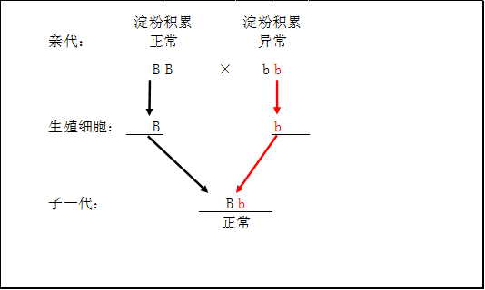
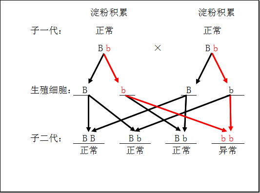
由遗传图解可知，子一代都是淀粉积累正常，自交后，子二代出现了淀粉积累异常植株，因此淀粉积累异常是是隐性性状，并且子一代是性状是显性性状，基因组成是杂合体，若用B、b表示控制该性状的基因，子一代的基因组成是Bb。
【小问4详解】
染色体是有DNA和蛋白质组成，基因是有遗传效应的DNA片段，染色体是遗传物质DNA的载体，所以该基因位于水稻的1号染色体上。
31. 某些蚊子能传播疾病，影响人类健康。科研人员以叮咬人类的伊蚊为材料开展相关研究。
（1）伊蚊作为携带病毒的生物媒介，属于传染病流行环节中的_________。
（2）为探究伊蚊如何区别人和动物，科研人员利用图1所示装置开展实验。几分钟后发现，伊蚊全部趋向人的气味一侧。科研人员的假设是_______。
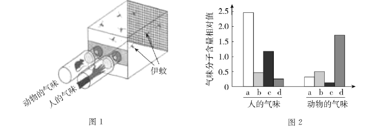
（3）科研人员测定出人和动物的气味均含有多种成分，其中主要气味分子a、b、c和d的含量如图2所示。据图推测，人的气味中吸引伊蚊的是a和_______两种气味分子，依据是________________________。
（4）为了研究上述两种气味分子对伊蚊的吸引作用，科研人员进行图3所示的三组实验。
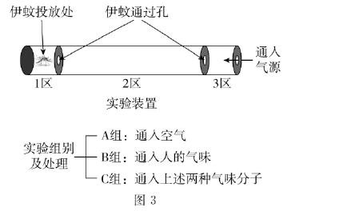
①本实验中A、B组的作用是_____________。
②本实验的观察指标为_____________。
③多次重复实验发现，A组伊蚊飞一会儿就随机停在1、2或3的某个区；B组伊蚊都兴奋地飞到3区；C组伊蚊的表现与B组相同。根据实验结果，可得出的结论是_______________________________________________________。
（5）请结合上述研究，提出一条科学防蚊的对策：_____________。
【答案】（1）传播途径
（2）伊蚊通过气味区分人和动物
（3） ①. c ②. 人的气味中a和c气体的相对含量高于动物的气味
（4） ①. 对照 ②. 伊蚊在ABC三个区的主要分布区域 ③. 伊蚊喜欢人的气味，且喜欢人的气味中的a和c气体
（5）多洗澡，减少气味的散出；用a和c气体引诱伊蚊并杀灭
【解析】
【分析】传染病是由病原体引起的，能在生物之间传播的疾病。传染病若能流行起来必须具备传染源、传播途径、易感人群三个环节。
对照实验是在研究一种条件对研究对象的影响时，所进行的除了这种条件不同外，其他条件都相同的实验，这个不同的条件，就是唯一变量。一般的对实验变量进行处理的，就是实验组，没有对实验变量进行处理的就是对照组。
【小问1详解】
传播途径是病原体离开传染源到达健康人所经过的途径，如空气传播、饮食传播、生物媒介传播等。伊蚊作为携带病毒的生物媒介，属于传染病流行环节中的传播途径。
【小问2详解】
观察图1装置可以发现，该装置可以使伊蚊选择人的气味和动物的气味。推测科研人员的假设是：伊蚊是依靠气味来区分人和动物。通入气味后，发现伊蚊全部趋向人的气味一侧。证明伊蚊是依靠气味来区分人和动物的。
【小问3详解】
伊蚊是依靠气味来区分人和动物，且伊蚊喜欢人的气味。主要气味分子a、b、c和d的含量如图2所示，人的气味中a和c气体的相对含量高于动物。则人的气味中吸引伊蚊的是a和c两种气味分子。
【小问4详解】
图3可知，A组通入空气，B组通入人的气味。A组和B组形成一组对照实验。变量是人的气味。本实验中A、B组的作用是对照。
由实验装置可知，通入气味后，3区的气体最浓，其次是2区，最后是1区，伊蚊会根据喜好而可能主要分布在1区、2区或3区。所以本实验的观察指标为伊蚊的分布。
若A组伊蚊飞一会儿就随机停在1、2或3的某个区；B组伊蚊都兴奋地飞到3区；C组伊蚊的表现与B组相同。则证明伊蚊喜欢人的气味，且喜欢人的气味中的a和c气体。
【小问5详解】
根据实验结果：伊蚊靠气味区分人和动物。且喜欢人的气味中的a和c气体。个人勤洗澡可以减轻身体的气味，减少对伊蚊的吸引。也可以利用a和c气体引诱并杀灭伊蚊。
32. 阅读科普短文，回答问题。
在北京的部分郊野公园，你会发现一些石块和枯枝落叶堆积在一起。这些石块和枯枝落叶真的是园林作业后随意丢弃或遗忘的吗？它们究竟是什么？有着什么样的作用？其实这是工作人员特意堆砌而成的本杰士堆（如图1）。
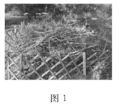
本杰士堆的搭建过程并不复杂：先选择枯木和树枝等搭建框架，然后选取石块放置在周边进行固定，最后倒入含有种子的土壤与落叶。搭建后，随着植物的生长，吸引来取食其叶片的昆虫，一些食虫鸟也会来此栖居。慢慢地，还会有小型兽类到访此处。本杰士堆中的生物多样性逐渐增加，构成了微小的生态系统，
如图2所示。
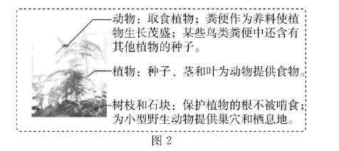
本杰士堆有生态修复型和科普教育型等类型。生态修复型的搭建地点要选择人为干扰程度低的地方，让野生动物有自由的栖息空间，加速生态系统的修复过程。科普教育型可修建在公园休憩区附近，以进行科普教育和宣传，提高人们的环保意识。
本杰士堆搭建的意义是用小生态的构建促进大环境的改善，实现“以生态的办法解决生态问题”。“十四五”期间，北京市园林绿化局将结合新一轮百万亩造林绿化工程，在森林和郊野公园中搭建更多的本杰士堆，这将推进首都生态环境的改善。
（1）本杰士堆中的所有生物和_______构成了生态系统。其中的植物可为动物提供食物，在生态系统成分中属于______。根据文中信息写出一条含有食虫鸟的食物链：___________________________。
（2）下列关于本杰士堆的叙述正确的是 （多选）。
A. 动物会取食植物，对生态系统只有负面作用
B. 微生物能够分解动物粪便，促进物质循环
C. 其中的各种生物相互联系，相互影响
（3）有关部门组织搭建本杰士堆的志愿活动，图3中适宜搭建生态修复型本杰士堆的地点为______（填字母）。
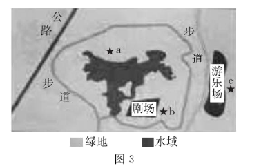
（4）如果有机会参与搭建本杰士堆的活动，你希望搭建的类型及理由是__________________。
【答案】（1） ①. 环境 ②. 生产者 ③. 植物→昆虫→食虫鸟 （2）BC （3）a
（4）科普教育型。环保要靠每一个公民，科普教育型本杰士堆可以进行科普教育和宣传，提高人们的环保意识。
【解析】
【分析】在一定的空间范围内，生物与环境所形成的统一的整体叫生态系统。生态系统包括生物成分和非生物成分，生物成分包括生产者(绿色植物)、消费者(动物)和分解者(细菌、真菌)。题干中的本杰士堆即是一个微小的生态系统。
动物在生态系统中的作用：促进物质循环，帮助植物传播花粉和种子，维持生态平衡。
【小问1详解】
在一定的空间范围内，生物与环境所形成的统一的整体叫生态系统。本杰士堆中的所有生物和环境构成了生态系统。
植物可为动物提供食物，在生态系统成分中属于生产者。生产者主要是指绿色植物，它们能进行光合作用将太阳能转变为化学能，将无机物转化为有机物，并将太阳能储存在有机物中。绿色植物制造的有机物不仅供自身生长发育的需要，也是其他生物类群的食物和能源的提供者。
文中信息中包含的食物链如：植物→昆虫→食虫鸟
【小问2详解】
动物直接或间接以植物为食，能维持生态平衡，促进物质循环。对生态系统并不是只有负面作用。微生物作为生态系统中的分解者，能够分解动物粪便，促进物质循环。本杰士堆是一个微小生态系统，其中的各种生物相互联系，相互影响。
故选BC。
【小问3详解】
生态修复型的搭建地点要选择人为干扰程度低的地方，让野生动物有自由的栖息空间，加速生态系统的修复过程。故图3中适宜搭建生态修复型本杰士堆的地点为a。
【小问4详解】
1.搭建生态修复型本杰士堆，生态系统的修复过程快，修复效果好。
2.搭建科普教育型本杰士堆，有科普教育的作用，能提高人们的环保意识。
灵活选择一种作答即可。